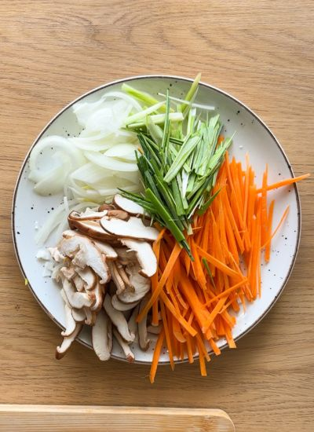
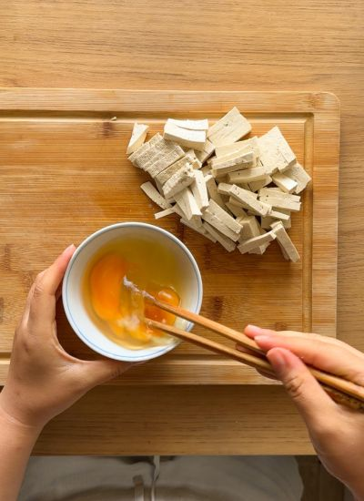
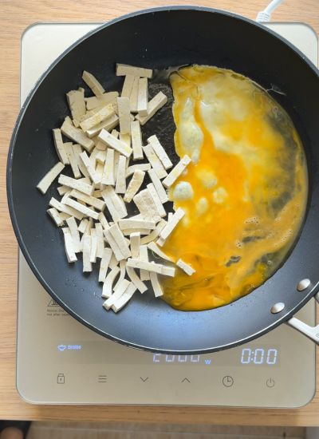
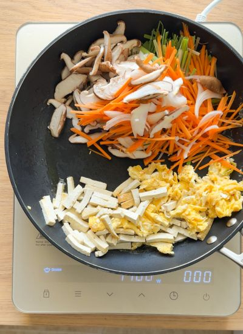
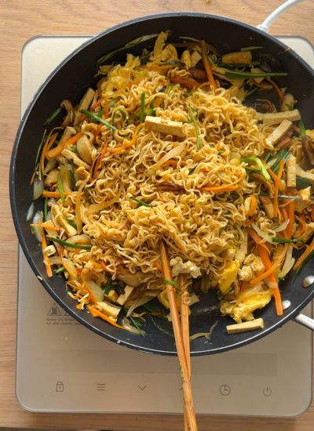
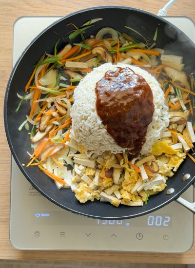

Principales · Asiática
← Recetas
Fideos Asiáticos en 20 Minutos

Preparación
- Corta las verduras en tiras finas (juliana).

- Prepara la proteína: corta el tofu en tiras pequeñas y bate los huevos con sal.

- Mezcla en un bol los ingredientes de la salsa.
- Cuece los fideos según el paquete, enjuaga con agua fría y cuela.
- Saltea la proteína en una sartén con aceite y apártala a un plato.

- Añade aceite y saltea las verduras con sal hasta que estén cocidas pero aún crujientes.

- Incorpora los fideos y la salsa; mezcla y cocina 1 minuto más.

- Devuelve la proteína, mezcla todo, rectifica de sal y sirve.

Galería